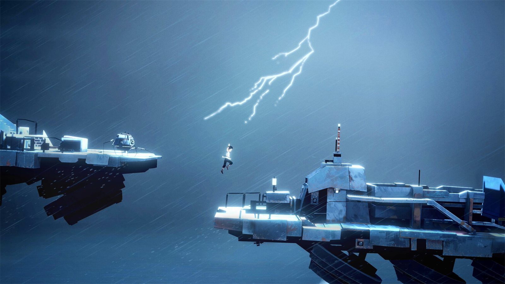

La secuela de Planet of Lana ha llegado apenas tres años después del primer juego de la mano del estudio indie sueco Wishfully. La primera entrega me gustó por su apartado visual excepcional y porque era un juego de plataformas y puzles que recordaba al estilo de Limbo o Inside, pero sin ser tan oscuro. Esta segunda parte está construida sobre los cimientos del primero e itera en su justa medida para hacer una experiencia jugable más entretenida.
Planet of Lana II tiene lugar dos años después de los eventos del primero. Tras aquellos acontecimientos, la pequeña Lana y su familia viven sus días con tranquilidad en una tribu que ha aprendido a servirse de las máquinas y su tecnología para prosperar como sociedad. Sin embargo, la avaricia del ser humano es insaciable, y veremos cómo otras tribus usan esa tecnología no para hacer el bien, sino para ejercer su dominio sobre tribus pacíficas y sus gentes. Los propios desarrolladores hablan de una experiencia independiente, así que no hace falta jugar al anterior para entender lo que está ocurriendo.
Escenarios pintados a mano y un idioma inventado
La aventura de Lana y de Mui, su entrañable mascota parecida a un pequeño ratón, les llevará a todo tipo de lugares espectaculares donde los de Wishfully hacen alarde de su estilo artístico. La labor de los artistas es sobresaliente, porque todos los escenarios están pintados a mano, ya sean los bosques, las costas, las cumbres heladas, las zonas montañosas o las ruinas olvidadas. También me gusta mucho el contraste que existe entre los paisajes naturales y las máquinas, entre las tribus y los robots, entre la artesanía y la tecnología.

Como curiosidad, el juego emplea un idioma inventado para los diálogos entre personajes, igual que Los Sims. Sorprendentemente, pese a no entender las palabras, es increíble ver cómo puedes inferir lo que está ocurriendo por el tono de voz, las emociones de los personajes o el contexto del momento. Me parece algo muy inteligente por parte del estudio, porque tiene una función tanto artística como económica.
Puzles correctos y unas secciones submarinas pesadas
La jugabilidad tampoco creo que sea algo excepcional, más bien está simplemente bien. Mejoran y llevan un paso más allá los puzles del anterior con mecánicas expandidas de lo que puedes hacer con Mui, pero no creo que sea suficiente como para resultar memorable. Mis favoritos eran aquellos en los que Mui controlaba algo del entorno para resolver el puzle. Por ejemplo, puedes llegar a controlar un pequeño pez con la habilidad de soltar tinta para que Lana pase inadvertida ante una amenaza.
No obstante, comparto con Jordan Ramée lo que apunta en su análisis para GameSpot sobre las secciones bajo el agua, que se hacen ligeramente pesadas. Ahí Lana "nada con una lentitud exasperante", en sus palabras, y eso provoca una sucesión frustrante de muertes por tiburones eléctricos o por ahogamiento. El capítulo tercero es prácticamente una larga serie de puzles acuáticos. A veces también se me hacía largo el tiempo que pasa desde que mueres hasta que reapareces. Y siento que hay momentos en los que el juego usa la muerte del jugador para enseñarle a superar la prueba, como un salto a una plataforma que, hasta que no pruebas, no sabes si vas a alcanzar.
La música de Takeshi Furukawa
La banda sonora está compuesta por Takeshi Furukawa y, al igual que en el primero, me parece genuinamente preciosa. Sus composiciones son orquestales, prácticamente de banda sonora de película. Me encanta porque creo que logra evocar una emoción con cada pieza. Mi favorita es el tema principal de Lana, una partitura cuya base se repite en varias canciones y que tiene su importancia dentro de la propia narrativa del juego.
En conclusión, sin ser el mejor juego dentro de su género, creo que Planet of Lana II es extremadamente bello y cuenta con una historia intrigante, igual que su predecesor. Acierta además al tratar temas de corte humanista, como el afán de poder y control del ser humano, y de corte más social, como la preservación del medio ambiente. Es un juego cortito, de apenas cinco o seis horas, disfrutable pese a tener algún que otro momento valle. Si jugaste al primero y te gustó, esta segunda entrega no te va a fallar.
Lo mejor
- Escenarios pintados a mano con un contraste precioso entre naturaleza y máquinas.
- La banda sonora orquestal de Takeshi Furukawa.
- El idioma inventado funciona narrativamente mejor de lo que cabría esperar.
Lo peor
- Las secciones submarinas son lentas y frustrantes.
- Los puzles mejoran los del primero, pero no llegan a ser memorables.
- Reaparecer tras morir tarda más de lo que debería.
Desglose de puntuación
Veredicto
Una secuela extremadamente bella y bien musicada que itera sin arriesgar. Los puzles cumplen y las secciones submarinas lastran, pero quien disfrutara del primero no se llevará una decepción.